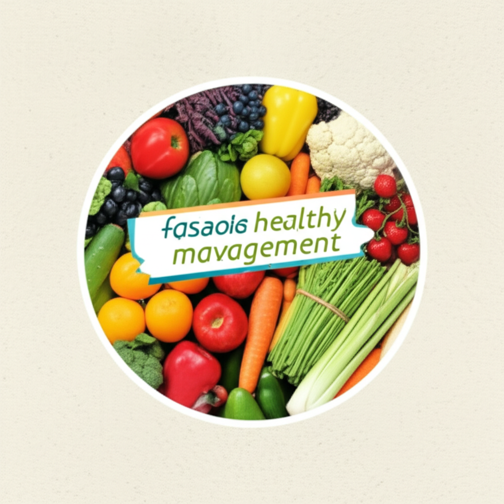

# 今日健康資訊綜述
## 引言
今天的新聞重點涵蓋了從癌症篩檢、心血管健康、體重管理到腦中風防治等多個健康議題。這篇文章將整合今日收集到的資訊，分析各個議題的重要性，並提供實用的健康建議。讓我們一起關注自身健康，提升生活品質。
## 主體內容
### 第一點：癌症篩檢與預防
嘉義縣衛生局提醒民眾重視癌症篩檢，並提供相關行程表連結。癌症預防的關鍵在於「均衡飲食」、「規律運動」、「體重控制」、「遠離菸檳」和「定期篩檢」。 定期篩檢能夠及早發現潛在的癌症風險，提高治癒率，是健康管理的重要一環。民眾應積極參與政府提供的篩檢資源，守護自身健康。
### 第二點：心血管健康與三高控制
及早開始控制三高（高血壓、高血糖、高血脂）對於維護心血管健康至關重要。研究顯示，三高與心血管疾病的發生和死亡率有密切關係。文章指出，妥善控制體重、血壓、血糖是預防心血管疾病的重要策略。王必勝先生分享了他成功減重並改善高血壓的經驗，證明了健康生活方式的益處。
### 第三點：體重管理與相關藥物
體重管理是維持健康的重要一環，除了飲食和運動，藥物也可能在特定情況下提供輔助。文章提到了台灣衛生福利部食品藥物管理署（TFDA）已核准猛健樂用於輔助改善第二型糖尿病患者的血糖控制，同時適用於患有肥胖共病的體重管理。此外，“减重赢健康”世界防治肥胖日科普活动在京举行，強調體重管理的重要性，並透過藝術形式將相關知識傳遞給大眾。
## 結論
今天的健康資訊涵蓋了癌症預防、心血管健康、體重管理和腦中風防治等多個重要領域。透過均衡飲食、規律運動、定期篩檢和控制三高等健康生活方式，我們可以有效預防疾病，提升生活品質。 請務必參考相關資訊，並根據自身情況諮詢專業醫療建議，為自己的健康做出最好的選擇。